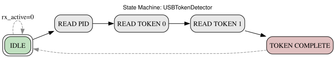
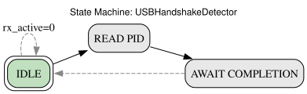
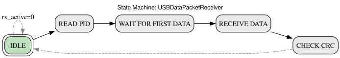
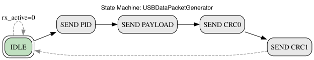
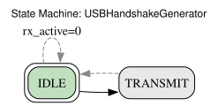
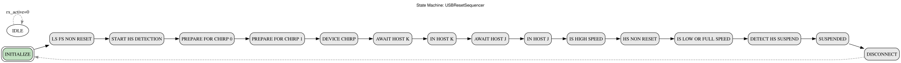
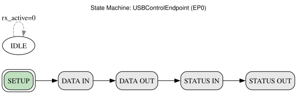
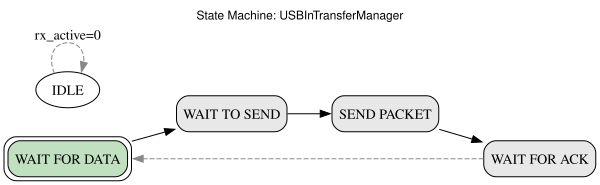
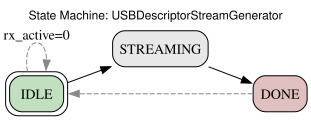
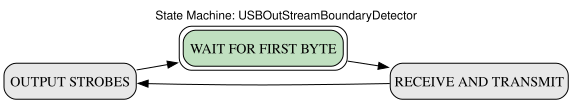

A complete USB 2.0 device stack for FPGAs, ported from LUNA (Amaranth HDL) to Migen / LiteX. Supports High Speed (480 Mbps) and Full Speed (12 Mbps) operation with Control, Bulk, Interrupt, and Isochronous endpoints. Tested and verified on Terasic DECA (MAX10 + TUSB1210 ULPI PHY).
LiteUSB is organized as a layered protocol stack. Data flows upward from the physical USB bus (ULPI/UTMI PHY signals) through packet detection, endpoint routing, transfer management, and finally to application-level streams.
┌─────────────────────────────────────────────────────────┐ │ Application Logic │ │ (e.g. CDC-ACM serial, bulk loopback, vendor requests) │ ├─────────────────────────────────────────────────────────┤ │ Stream Interfaces USBInStreamInterface │ │ (USBOutStreamInterface) USBOutStreamInterface │ ├──────────────┬──────────────────┬───────────────────────┤ │ Endpoints │ Control (EP0) │ Transfer Managers │ │ │ Bulk / Interrupt│ (Double-buffered IN) │ │ │ Isochronous │ │ ├──────────────┴──────────────────┴───────────────────────┤ │ USBEndpointMultiplexer │ │ (Priority-encoder OR-tree: routes tokens to endpoints) │ ├─────────────────────────────────────────────────────────┤ │ USB2Device / USBDevice │ │ Token detection, handshake generation, CRC, timing │ ├─────────────────────────────────────────────────────────┤ │ USBResetSequencer │ │ Bus reset, HS chirp handshake, suspend/resume │ ├─────────────────────────────────────────────────────────┤ │ PHY Interface │ │ ULPI (8-bit, 60 MHz) | UTMI (simulation) │ │ Gateware PHY (raw I/O) | │ ├─────────────────────────────────────────────────────────┤ │ Physical USB Bus (D+/D-) │ └─────────────────────────────────────────────────────────┘
| Domain | Frequency | Purpose |
|---|---|---|
sys | Platform-dependent | Migen default; application logic |
sync | 120 MHz (typical) | General synchronous logic |
usb | 60 MHz | All USB protocol logic (ULPI driven) |
fast | Optional | High-speed application processing |
usb clock domain
via ClockDomainsRenamer("usb"). The PHY clock loop requires
with_reset=False on the USB clock domain — otherwise the PLL-lock-gated
reset deadlocks: the PHY needs the clock to start, but the clock won't start
until it sees the PHY's output, which won't start without the clock.
LiteUSB supports three PHY interfaces for connecting to the physical USB bus:
liteusb.gateware.interface.utmi.UTMIInterface
The UTMI (USB 2.0 Transceiver Macrocell Interface) is a parallel 8-bit interface standardized in the USB 2.0 specification. It is primarily used in simulation and as an internal abstraction layer.
| Signal | Width | Direction | Description |
|---|---|---|---|
rx_data | 8 | PHY → Device | Receive data bus |
rx_active | 1 | PHY → Device | Receive in progress |
rx_valid | 1 | PHY → Device | Receive data valid |
tx_data | 8 | Device → PHY | Transmit data bus |
tx_valid | 1 | Device → PHY | Transmit data valid |
tx_ready | 1 | PHY → Device | PHY ready to accept transmit |
line_state | 2 | PHY → Device | D+/D- state (00=SE0, 01=J, 10=K) |
op_mode | 2 | Device → PHY | Operating mode |
xcvr_select | 2 | Device → PHY | Transceiver speed |
term_select | 1 | Device → PHY | Termination selection |
liteusb.gateware.interface.ulpi.ULPIInterface
ULPI (UTMI+ Low Pin Interface) reduces the UTMI pin count from ~30 to 12 by serializing control and status onto the 8-bit data bus. This is the interface used for external PHY chips like the TUSB1210.
| Signal | Width | Description |
|---|---|---|
data | 8 (bidirectional) | Multiplexed data/command/status |
clk | 1 | 60 MHz clock from PHY |
dir | 1 | PHY → FPGA: bus direction (1=PHY drives) |
nxt | 1 | PHY → FPGA: data accepted / next byte |
stp | 1 | FPGA → PHY: stop / end of packet |
rst | 1 | FPGA → PHY: reset |
liteusb.gateware.interface.ulpi.UTMITranslator
The UTMITranslator is the bridge that converts between the ULPI 12-pin bus
and the internal UTMI record used by all downstream gateware. It contains four
sub-modules:
| Sub-module | Function |
|---|---|
ULPIRegisterWindow | ULPI register read/write protocol (REG_WRITE=0x80, REG_READ=0xC0) |
ULPIRxEventDecoder | Decodes RxCmd bytes into line_state, vbus_valid, rx_active, rx_error |
ULPIControlTranslator | Converts UTMI control signals into sequenced ULPI register writes |
ULPITransmitTranslator | Translates UTMI tx_valid/tx_data into ULPI TRANSMIT_COMMAND + data + STP |
liteusb.gateware.usb.usb2.packet
The packet layer handles USB packet framing as defined in USB 2.0 §8. It contains 10 classes that collectively detect, deserialize, generate, and serialize all USB packet types.
Detects IN, OUT, SETUP, and SOF tokens on the UTMI receive data stream. The FSM transitions through IDLE → READ_PID → READ_TOKEN_0 → READ_TOKEN_1 → TOKEN_COMPLETE → IDLE. It also performs address matching — tokens addressed to other devices are silently ignored.

Source: USBTokenDetector in packet.py:259
Detects handshake PID bytes (ACK, NAK, STALL, NYET) on the UTMI bus. FSM: IDLE → READ_PID → AWAIT_COMPLETION → IDLE. Since handshake packets contain only a PID byte, detection is a single-cycle observation.

Source: USBHandshakeDetector in packet.py:453
Implements the CRC-16 polynomial used in USB data packets.
Polynomial: x^16 + x^15 + x^2 + 1 (0x8005, reflected form 0xA001).
Operates continuously on the data stream and provides separate CRCs
for each endpoint through the DataCRCInterface.
Receives DATA0/DATA1/DATA2/MDATA packets from the UTMI rx bus, verifies
the CRC-16, and produces a USBOutStreamInterface. The receiver strips
the PID and CRC bytes — only the payload reaches the stream.

Source: USBDataPacketReceiver in packet.py:673
High-level wrapper around USBDataPacketReceiver that captures data
packets into a byte array (packet[]). Also validates CRC — invalid
packets set new_packet=0. Used by the SETUP decoder to capture 8-byte
setup packets.
Generates complete USB data packets from a USBInStreamInterface.
Produces: PID byte (DATA0/DATA1/DATA2/MDATA) → payload bytes → CRC-16
(2 bytes, LSB first). The FSM advances on tx.ready handshake.

Source: USBDataPacketGenerator in packet.py:1055
Generates handshake packets (ACK, NAK, STALL) on the UTMI output.
FSM: IDLE → TRANSMIT. Strobe issue_ack (or equivalent) to send a
single PID byte with proper tx_valid/tx_ready handshake.

Source: USBHandshakeGenerator in packet.py:1219
Speed-aware interpacket gap timer. Monitors interpacket delays mandated by the USB spec:
liteusb.gateware.usb.usb2.reset
A 14-state FSM that manages the complete USB bus state lifecycle: bus reset detection, high-speed chirp handshake, suspend/resume, and forced disconnect.

Source: USBResetSequencer in reset.py:53
liteusb.gateware.usb.usb2.device.USBDevice (also re-exported from
liteusb.gateware.usb.device)
The top-level USB device module. Instantiates all packet-layer submodules and the reset sequencer, then connects them to the internal endpoint collection. Maintains device state registers:
| Register | Width | Description |
|---|---|---|
address | 7 | USB device address (assigned via SET_ADDRESS) |
configuration | 8 | Current configuration number |
frame_number | 11 | Most recent SOF frame number |
connect | 1 | Assert to connect pull-up (D+ for FS, terminate for HS) |
liteusb.gateware.usb.usb2.endpoint.EndpointInterface
A per-endpoint record that bundles all signals needed for endpoint operation: tokenizer (address + direction matching), RX/TX streams, handshake I/O, speed configuration, address/config change notifications, data CRC interface, and interpacket timer connection.
liteusb.gateware.usb.usb2.endpoint.USBEndpointMultiplexer
A priority-encoder OR-tree multiplexer that routes shared packet-layer
resources (CRC, timer, tokenizer, handshakes, RX) to the appropriate
endpoint. Each endpoint's interface.claim signal forms a priority
chain — the first matching endpoint wins. This ensures that EP0 always
has the highest priority.
liteusb.gateware.usb.usb2.control.USBControlEndpoint
The mandatory control endpoint (endpoint 0) handles USB enumeration.
Contains a 5-state FSM for SETUP / DATA / STATUS phases, plus a
USBSetupDecoder and USBRequestHandlerMultiplexer.

Source: USBControlEndpoint in control.py:24
liteusb.gateware.usb.usb2.transfer.USBInTransferManager
Double-buffered IN transfer sequencer. Converts an arbitrary-length application stream into packet-sized chunks on the USB bus.

Source: USBInTransferManager in transfer.py:22
generate_zlps=1, sends a zero-length packet after
a full-size last-packet to signal transfer completion.discard signal drops the next queued packet without
transmitting it.liteusb.gateware.usb.usb2.descriptor.USBDescriptorStreamGenerator
Serves USB descriptors (device, configuration, string, etc.) from a ROM
(Migen Memory primitive) initialized at build time. Outputs a
USBInStreamInterface with first/last packet framing.

Source: USBDescriptorStreamGenerator in descriptor.py:19
Parameters: start_position (byte offset), max_length (truncation).
Supports sub-descriptor selection via offset signal.
liteusb.gateware.usb.request.interface.SetupPacket
A Record capturing the parsed 8-byte SETUP packet from a control transfer:
| Field | Width | Offset | Description |
|---|---|---|---|
recipient | 5 | bmRequestType[0:4] | Device, Interface, Endpoint, or Other |
type | 2 | bmRequestType[5:6] | Standard, Class, or Vendor |
is_in_request | 1 | bmRequestType[7] | Direction: 0=Host→Device, 1=Device→Host |
request | 8 | bRequest | Specific request code |
value | 16 | wValue | Parameter |
index | 16 | wIndex | Parameter |
length | 16 | wLength | Data stage length |
liteusb.gateware.usb.usb2.request.USBSetupDecoder
Detects the SETUP PID, uses the USBDataPacketDeserializer to capture
the 8-byte setup packet, and translates it into a SetupPacket record.
Handles interpacket delay (2.5 μs at FS) for ACK timing.
liteusb.gateware.usb.request.standard.StandardRequestHandler
Implements all standard USB device requests required for enumeration:
GET_DESCRIPTOR — Serves device, configuration, and string descriptorsSET_ADDRESS — Assigns a new 7-bit device addressSET_CONFIGURATION — Activates a configurationGET_CONFIGURATION — Returns current configuration numberGET_STATUS — Returns device status (self-powered, remote wakeup)SET_FEATURE / CLEAR_FEATURE — Feature controlliteusb.gateware.usb.stream
Thin Record wrappers that bridge between the UTMI bus signals and application-level stream logic.
| Record | Signals | Connects to |
|---|---|---|
USBInStreamInterface | valid, payload, ready | UTMI tx_valid, tx_data, tx_ready |
USBOutStreamInterface | valid, next, payload | UTMI rx_active, rx_valid, rx_data |
Because UTMI does not signal packet boundaries, this module injects
a 2-byte pipeline delay to detect first and last byte positions
within a received data stream.

Source: USBOutStreamBoundaryDetector in stream.py:102
LiteUSB's test suite comprises 48 tests across 12 test modules, all
passing. Tests use migen.sim.run_simulation with the UTMI interface
as a test harness — the host controller is modeled as a Python generator
that drives utmi.rx_active, rx_valid, and rx_data signals and
observes tx_valid, tx_data, and tx_ready.
18 tests in 6 classes covering token detection, handshake detection, data receive/deserialize, data generate, handshake generate, and interpacket timing.
USBTokenDetector): Sends an OUT token to address 0x3a; verifies new_token=1, pid=OUT, address=0x3a, endpoint=0xa.USBTokenDetector): Sends SOF token with frame number 0x53a; verifies new_frame=1, frame=0x53a.USBTokenDetector): Sends token to 0x3a when address=0x1f; verifies new_token=0 (filtered).USBHandshakeDetector): Detects ACK (PID 0xD2) via single-cycle PID observation.USBHandshakeDetector): Detects NAK (PID 0x5A).USBHandshakeDetector): Detects STALL (PID 0x1E).USBHandshakeDetector): Detects NYET (PID 0x96).USBDataPacketReceiver, USBDataPacketCRC): Sends DATA0 + 8 data bytes + CRC16. Verifies stream valid after buffering, CRC exclusion, and rx_valid pause/resume.USBDataPacketReceiver, USBDataPacketCRC): Sends DATA1 + CRC only (zero-length payload); verifies packet_complete=1.USBDataPacketDeserializer; uses USBDataPacketReceiver, USBDataPacketCRC): Sends PID + 4 bytes + CRC; verifies captured packet bytes.USBDataPacketDeserializer; uses USBDataPacketReceiver, USBDataPacketCRC): Sends corrupted CRC; verifies new_packet=0.USBDataPacketGenerator; uses USBDataPacketCRC): Feeds a stream with 8-byte payload; verifies TX emits PID + bytes + 2 CRC bytes in correct order.USBDataPacketGenerator; uses USBDataPacketCRC): Single-byte stream; validates completion.USBDataPacketGenerator; uses USBDataPacketCRC): ZLP request; verifies PID emitted then two zero CRC bytes.USBHandshakeGenerator): Pulses issue_ack; verifies TX emits ACK byte, stays valid until tx.ready.USBHandshakeGenerator): Same with tx.ready=1 already high; verifies single-cycle valid.USBInterpacketTimer): Configures FS speed; checks tx_allowed at ~10 cycles, tx_timeout at ~32, rx_timeout at ~80.2 tests covering isochronous stream endpoints.
USBIsochronousStreamInEndpoint): ISO IN endpoint — 512-byte stream verified with correct first/last framing.USBIsochronousStreamOutEndpoint; uses TransactionalizedFIFO): ISO OUT endpoint — 512 bytes received, TransactionalizedFIFO commit timing verified.7 tests covering all descriptor types, offsets, truncation, ZLP, and error cases.
GetDescriptorHandlerBlock; uses USBDescriptorStreamGenerator): All 9 descriptor types (device, config, interface, endpoint, string, non-consecutive at 0xfe, HID) tested at start_position=0, max_length=full, both with and without backpressure (delay_ready=10).GetDescriptorHandlerBlock; uses USBDescriptorStreamGenerator): Same as above but start_position=1 (offset by one byte).GetDescriptorHandlerBlock; uses USBDescriptorStreamGenerator): max_length=min(8, len\u22121), with and without delay_ready=10 — tests truncated stream.GetDescriptorHandlerBlock; uses USBDescriptorStreamGenerator): start_position=1, max_length=min(8, len\u22121) — combined offset + truncation.GetDescriptorHandlerBlock; uses USBDescriptorStreamGenerator): max_length=0 — expects tx.last=1, tx.first=0, tx.valid=1 (header-only, ZLP).GetDescriptorHandlerBlock; uses USBDescriptorStreamGenerator): STRING at index 100 → stall asserted.GetDescriptorHandlerBlock; uses USBDescriptorStreamGenerator): Types 0x10 and 0x42 → stall asserted.4 tests covering IN transfer manager.
USBInTransferManager): Double-buffering, DATA PID toggle, retransmission on NAK.USBInTransferManager): NAK pulses when no data queued.USBInTransferManager): ZLP after full last-packet; no ZLP after short last-packet.USBInTransferManager): Discard drops queued packet; subsequent transmission uses correct PID.3 tests covering SETUP decoder.
USBSetupDecoder; uses USBDataPacketDeserializer, USBHandshakeGenerator): Full SETUP transaction → decoded SetupPacket fields verified.USBSetupDecoder; uses USBDataPacketDeserializer, USBHandshakeGenerator): 10-cycle gap before ACK at FS speed.USBSetupDecoder; uses USBDataPacketDeserializer): Truncated (4-byte) setup → packet.received=0.1 test covering the 14-state reset sequencer.
USBResetSequencer): SE0 → bus_reset pulse → HS detection → CHIRP mode transition.8 tests in 4 classes covering ULPIRegisterWindow, ULPIRxEventDecoder, ULPIControlTranslator, and ULPITransmitTranslator.
ULPIRegisterWindow): Asserts ulpi_data_out == 0 when idle (NOP command).ULPIRegisterWindow): Full read flow — REG_READ (0xC0) command, BUSY assert, NXT handshake, turnaround, data latch (0x07).ULPIRegisterWindow): DIR asserted mid-read → ulpi_out_req drops; DIR cleared → command re-driven; NXT → turnaround → data latched.ULPIRegisterWindow): REG_WRITE (0x80) with address=0x02, data=0xBC; verifies command, data, STOP, and BUSY deassert.ULPIRxEventDecoder): DIR+NXT together → no RxEvent. DIR alone after turnaround → line_state=0b10, vbus_valid=1, rx_active=1, rx_error=0.ULPIControlTranslator): Changing op_mode, dp_pulldown, dm_pulldown → function control (addr 0x04) then OTG control (addr 0x0A) sequenced via register window.ULPITransmitTranslator): tx_valid=1, tx_data=0xA5 (SOF) → TRANSMIT_COMMAND (0x40) with PID[3:0], tx_ready after NXT, data byte passed through, STP after tx_valid=0.ULPITransmitTranslator): ACK PID 0xD2 → TRANSMIT_COMMAND, NXT accepted, then STP and idle.1 test covering the boundary detector.
USBOutStreamBoundaryDetector): 4-byte stream → first/last strobes verified after 2-cycle pipeline delay.2 tests from test_usb2_device.py (requires the custom run_tests.py runner).
USBDevice; exercises USBControlEndpoint, StandardRequestHandler, GetDescriptorHandlerBlock, USBSetupDecoder): Full USB enumeration sequence — 8-byte/64-byte GET_DESCRIPTOR(DEVICE), SET_ADDRESS, read descriptor at new address, device qualifier (expects STALL), config descriptor (with/without subordinates), string descriptors, SET_CONFIGURATION, GET_CONFIGURATION.USBDevice; exercises GetDescriptorHandlerBlock): Configuration descriptor with 30 endpoints (15 IN + 15 OUT).USBStreamOutEndpoint2 tests from the ULPI test module.
USBDevice with USBStreamOutEndpoint; exercises USBInTransferManager): Full-device OUT→IN loopback through bulk endpoints with rx_valid gaps.USBDevice with USBStreamOutEndpoint; exercises USBInTransferManager): Full-device IN constant stream, 4 rounds, DATA toggle verification.